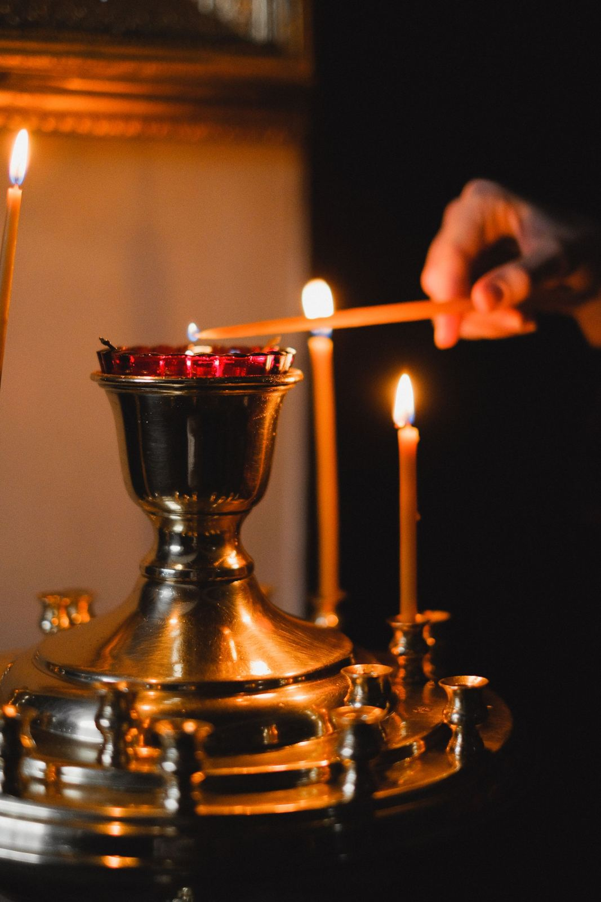

Preparation for the Sacraments
[PLACEHOLDER IMAGE, NOT HOLY FAMILY]
In order to receive any of these sacraments, it is ordinarily required that a person undergo some period of preparation to ensure that the person understands the meaning of the sacrament and to help them make a sound decision whether or not to receive the sacrament(s).
[IMAGE: THE LARGE FIRST COMMUNION GROUP PHOTOGRAPH — 16:7 — RELEASE REQUIRED FOR EVERY CHILD IDENTIFIABLE IN IT]
SACRAMENTAL PREPARATION FOR FIRST RECONCILIATION AND FIRST EUCHARIST
The Eucharist is the source and summit of our lives as Catholics. Therefore, before preparing to receive Jesus Christ in the Eucharist, children must first come to know and love Him at an age-appropriate level. The Archdiocese of Los Angeles requires a two-year preparation period for First Eucharist. Generally, this preparation begins when a child enters first grade, and the sacraments of First Reconciliation and First Eucharist are received in second grade. However, we also form children in grades 3 to 5. During the formation process, it is expected that a child actively participate in the Mass and fully participate in their second consecutive year before receiving their First Eucharist.
There are 6 significant principles presumed in catechizing for and celebration of the Sacraments:
- The person’s faith-relationship with Christ in the Church and on-going conversion of heart
- The implementation of a parish process that helps determine the person’s readiness for reception
- The involvement of the family of the candidate in the preparation process and in the celebration
- The participation of the parish community in the preparation and in the celebration
- The person’s desire to receive the Sacrament shown by the individual and/or the individual’s family
- Pastoral sensitivity to the circumstance of each individual
[DOCTRINAL CONTENT — DRE AND/OR PASTOR TO REVIEW AND APPROVE ALL TEXT]